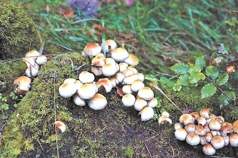

Mushroom
This article is about fungi. For use in food, see Edible mushroom. For other uses, see Mushroom (disambiguation).
"Toadstool" redirects here. For other uses, see Toadstool (disambiguation).
Etymology
The terms "mushroom" and "toadstool" go back centuries and were never precisely defined, nor was there consensus on application.
Identification
Identifying what is and is not a mushroom requires a basic understanding of their macroscopic structure. Most are basidiomycetes and gilled.